From observation to action: social information foraging, dopamine timing and causal credit assignment
Animals learn when social information is worth sampling, carry its consequences across multiple timescales, convert sampled content into their own action, and assign credit to social outcomes. The default SLM turns these operations into testable variables; SWM tests which parts emerge in a data-driven recurrent state, VTA and JAWS test their neural and causal roles, and external datasets test which computations recur under matched evidence tiers.
Mechanistic SLM + generic choice persistence is the default behavioral model; it beats Current+CK in 20/27 animals and TinyRNN in 23/27.
Prospective efficacy adds beyond all 13 current social cues. Scrubbing the SLM-coordinate subspace selectively impairs Observe policy relative to matched random subspaces.
VTA dopamine follows episode chronology: pre-outcome sampling policy, sampling action-prediction error, then post-outcome reward/social-credit update.
JAWS lowers the post-outcome Active social-credit update in 10/10 animals and accumulated Active credit in 9/10, while gross observation is preserved.
In learners, observing demonstrator feeding raises native Feed hazard within 3 s; the state-residualized increase remains +6.09 pp.
Multiscale state clears stronger matched models in 8/10 held-out Human subjects and 8/10 held-out Rats. Primate results remain explicitly nested or architectural evidence.
The page follows the biological problem in order: acquisition → information value → memory → default SLM → data-driven SWM → content-to-action conversion → neural implementation → causal decomposition → mechanistic synthesis → later generalization → cross-task evidence.
SOE is acquired
SRI rises in 35/40 animals; live social input, visual access and familiarity constrain successful acquisition.
Social information has adaptive value
Held-out social-state value depends on current self-state and changes with training.
Learning spans seconds to days
Next-decision switching, ~4.5–7.5 min history and a transient cross-day prior are independently recovered.
Default SLM earns its complexity
The mechanistic state plus generic persistence clears weak/classical baselines while retaining experimentally testable coordinates.
SWM separates two functional components
An SLM-like subspace contributes to Observe policy; prospective social efficacy is a distinct social-content-dependent variable.
Sampled content drives Feed
Demonstrator-feeding content produces a short-latency increase in the learner’s native Feed hazard.
VTA resolves the episode in time
Q/RPE can explain Post DA; the pre-outcome Early policy and Middle APE require the broader temporal SLM account.
Visual access and dopamine teaching separate
Visual Block limits useful content; JAWS weakens post-outcome Active social-credit teaching while gross sampling remains.
A coupled two-policy architecture emerges
Observe policy controls information acquisition; native Feed is self-state dominated and receives a short-lived sampled-content signal.
SLM is generatively sufficient
A closed-loop SLM regenerates broad learning trajectories and behavioral-state organization; recurrent-agent policy is compactly described by SLM coordinates.
Later generalization is modular
Social credit adds behavior-independent prediction for novel-food initiation; APE strongly maps to later shock reactivity without demonstrated superiority over simple behavior.
Cross-task evidence is tiered
Human and Rat give the strongest independent-unit external support for multiscale state; other computations currently have component, nested or architectural support.
SOE is acquired across the full cohort and successful learning improves observation-to-action conversion
Across all 40 animals, SRI rises from early to late training in 35/40 animals. Learners are defined from late-training SRI for the mechanistic modeling contract. The acquisition headline therefore uses the full 40-animal cohort, while conversion is reported as a separate learner-cohort analysis.
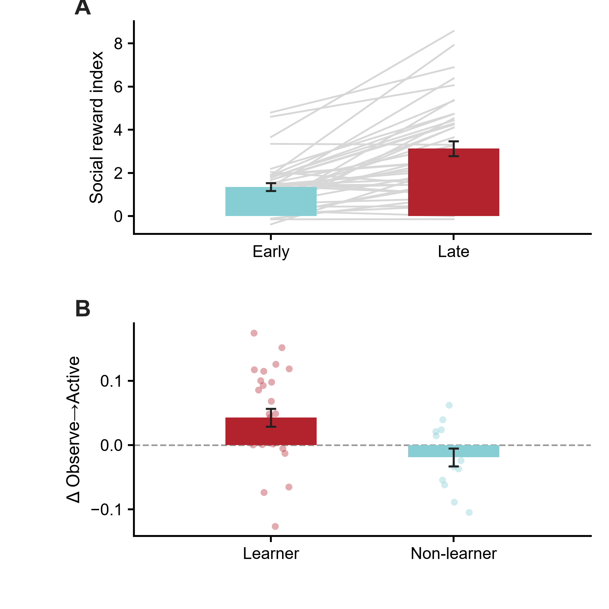
Swipe the table horizontally for all columns →
Foundational behavioral controls
| Discovery | Result | Interpretation | Evidence type |
|---|---|---|---|
| Acquisition | strict learner SRI ≈1.07→4.58; older n=13 lineage .67±.34→2.82±.44, P<.001 | Social coordination strengthens across training. | learner cohort |
| Live social input | Live demonstrator > simulated demonstrator; simulated SRI ≈.499±.258, n=13, P<.001. | Live-social interaction carries the effective teaching signal. | live-social control |
| Visual access | opaque barrier ≈69% reduction; current VB 3.67→1.08, 23/25 lower | successful social coordination requires visual information | historical + current visual-access evidence |
| Familiarity | unfamiliar partner reduces SRI ≈44%, n=11, P<.05 | social evidence is weighted by partner identity/familiarity | historical familiarity evidence |
| Observation phenotype | Socially directed observation rises with training. | Learning refines selective social observation. | training-dependent observation |
| Conversion | Learner Observe→Feed ≈.431→.641; learning progress β≈+.126. | Successful learners become more efficient at using sampled social information. | learner cohort |
Additional behavioral analyses
Active orienting carries predictive social information
Demonstrator feeding/spout state is highly predictive, but observer-side head direction, facing, angular velocity, social turn and social gaze nearly match the all-feature classifier. Social gaze is the strongest single observer-side feature in the manuscript lineage.
Learning reweights an existing behavioral manifold
Successful active-reward bouts are preceded by distinct states. The global manifold remains broadly stable, while occupancy shifts toward socially informative motifs with training.
Conversion progress tracks learning
Conversion progress correlates with ΔSRI (ρ≈.426, P=.0086), directly linking successful information-to-action transfer to behavioral learning.
Social information has state-dependent decision value
Held-out predictive value asks a direct question: how much does knowing the social state improve prediction of the animal's next choice?
Full social state versus the observer-only baseline: median +0.00365 nats/decision; rrb=.725; P=.000268.
Median late−early = −0.00378 nats/decision; rrb=−.619; P=.00194.
Social information is most useful when the observer is farther from its own spout.
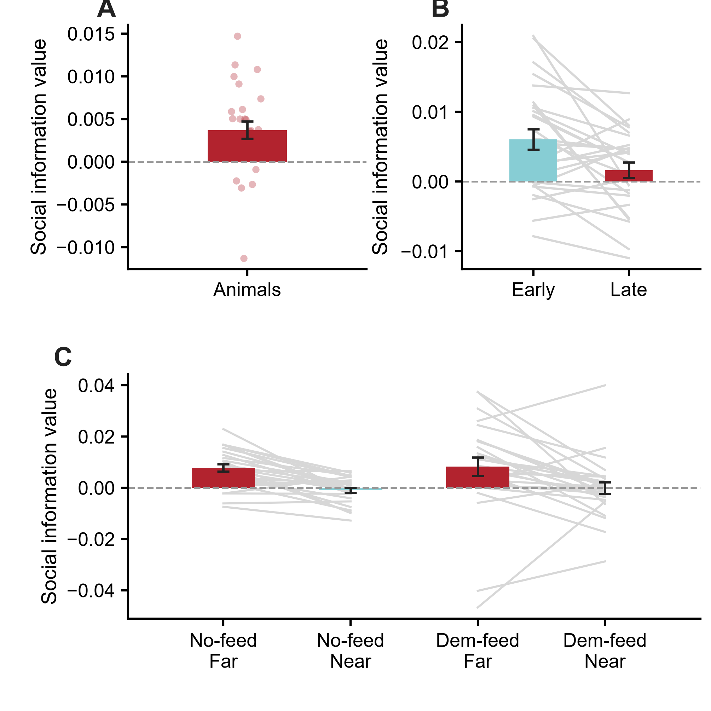
One social-learning strategy carries memory from the next decision to minutes and across days
The timescales were recovered independently before the final SLM. Each scale answers a different behavioral need: immediate outcome adjustment, integration of recent social history, and continuity across sessions.
After Active or Passive outcomes, stopping rises immediately; re-entry falls by about 8–9 pp.
Selected γ=.95–.97 corresponds to 20–33 events. Multievent history adds ΔNLL=.0348; the best single-exponential eligibility trace adds only ~.0001.
The true chronological day order beats 500 within-animal day shuffles (P=.001996); retaining the previous-day prior improves 29/40 animals (P=.0125).

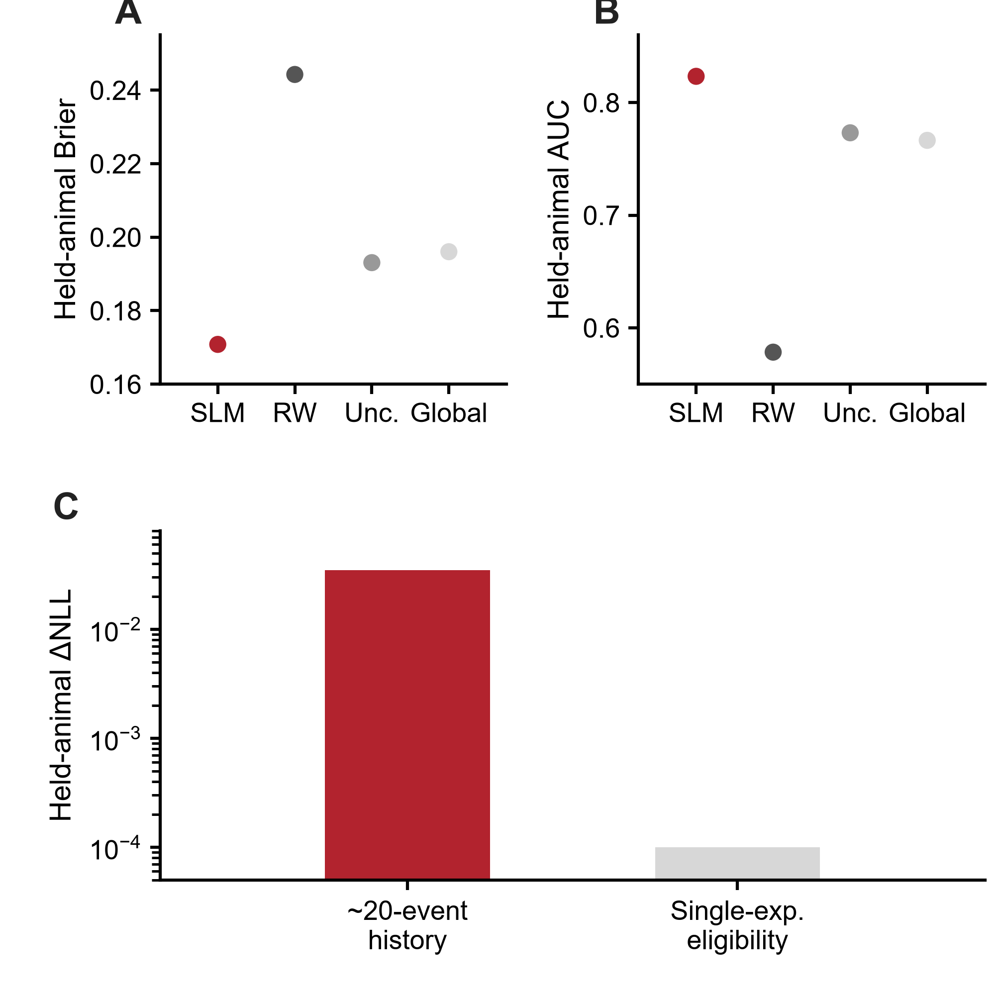
The default behavioral SLM is the mechanistic SLM state plus one generic choice-persistence term
SLM asks which compact variables are sufficient to explain social-information sampling while remaining testable in neural and causal experiments. Choice persistence absorbs generic serial choice bias; it is part of the default behavioral readout and is not interpreted as the social-learning mechanism itself.
Prevalence, clock, previous choice and current-state baselines establish how much prediction is available before any learning model is introduced.
The mechanistic SLM core beats RW, WSLS, Q-family, forgetting-Q and choice-kernel baselines under the restricted contract.
SLM + generic choice persistence beats Current+CK in 20/27 animals (P=.00169) and TinyRNN in 23/27 (P=1.59×10⁻⁵).
Default SLM and full-history MLP are indistinguishable in the paired held-animal comparison; the MLP serves as a ceiling check.
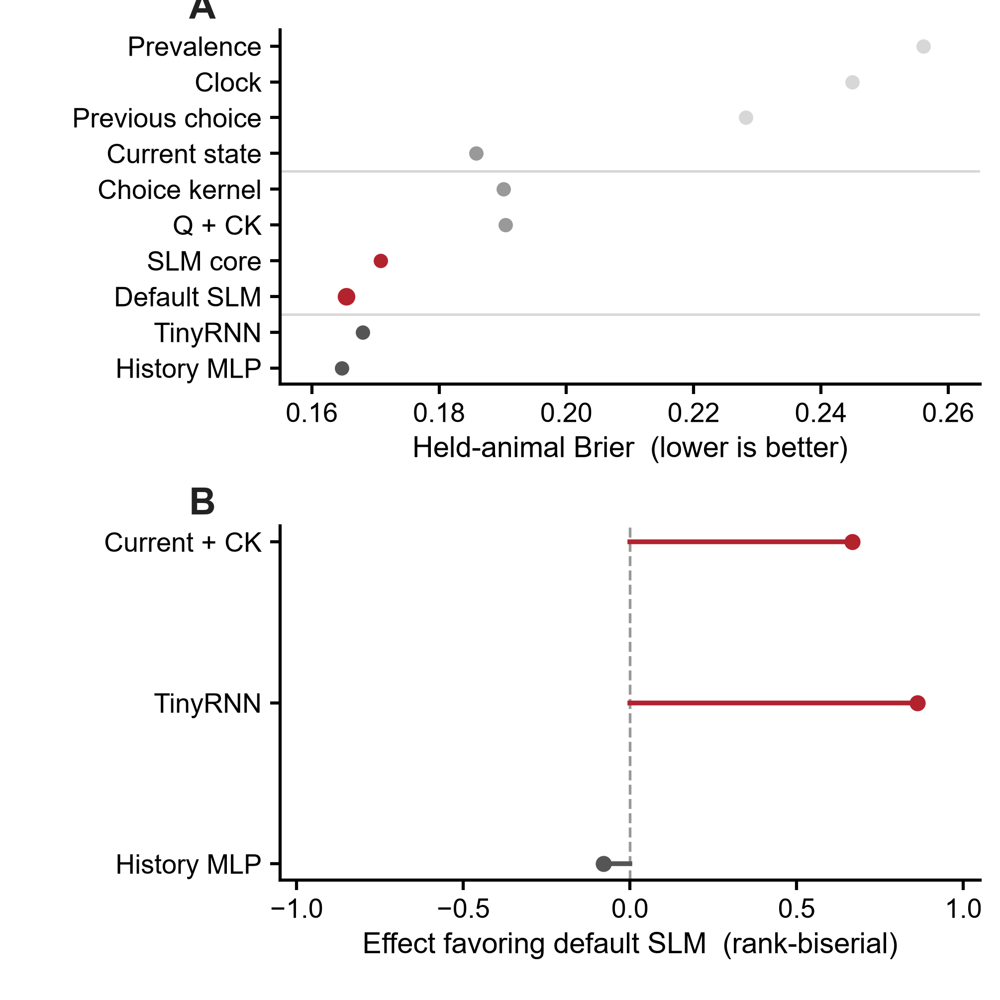
Default behavioral model, APE definition, RPE comparator logic, JAWS terminology and Feed-stage boundaries.

Six-family recovery is 97.2%; focused Feature-Q / policy / actor recovery is 59/60 under the recursively generated learner contract.
SWM separates common decision coordinates from a distinct prospective social-efficacy state
SLM starts from explicit hypotheses about state, policy and social credit. SWM is a recurrent Social World Model trained without those SLM equations. The critical test therefore has three parts: whether SLM-like coordinates are accessible, whether that subspace has a selective behavioral function, and whether SWM contains additional social information that SLM coordinates do not capture.
SLM pre-event state + previous-choice persistence + all 13 current social cues give AUC=.6247; adding ΔActive raises it to .6391. The gain is positive in 21/27 animals, P=.000843.
Coherent trajectory replacement lowers efficacy AUC .6196→.5609; no-social retraining lowers it to .5715.
SLM-coordinate scrub causes a specific Observe-policy loss beyond 32 matched random subspaces in 26/27 animals; P=5.22×10⁻⁷.
Full SWM predicts future motifs better than an SLM-coordinate-only readout in 27/27 held-out animals.
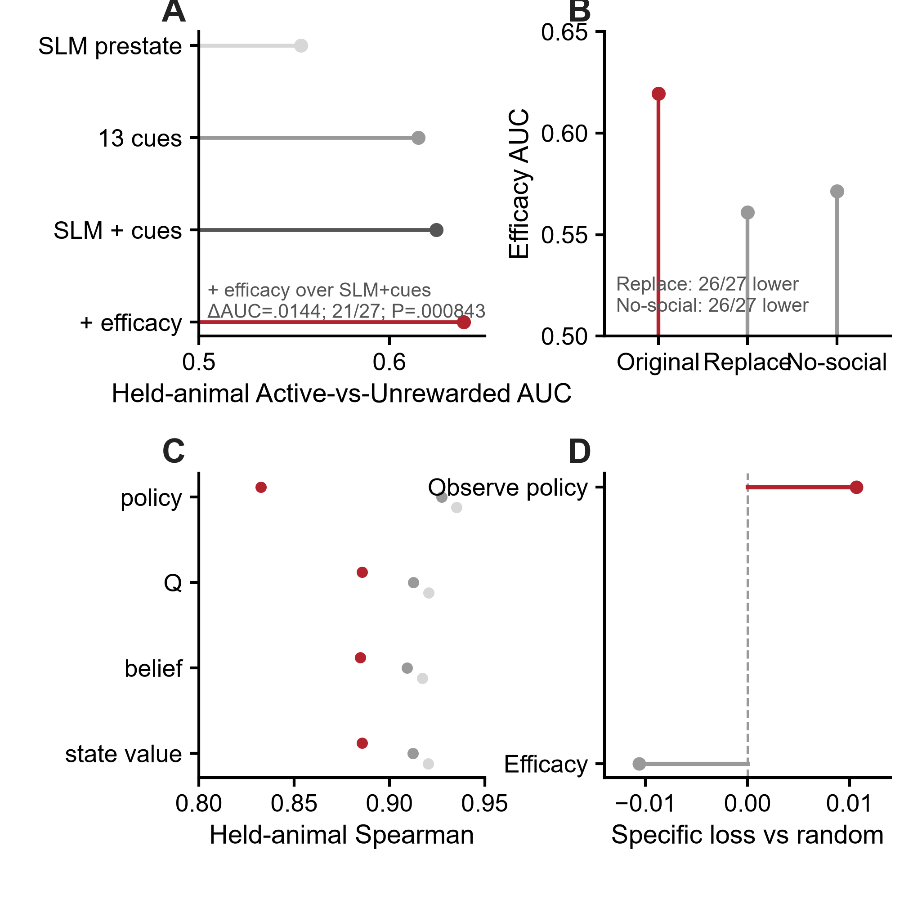
Supporting SWM controls and benchmark panels


Panel-level current-cue, social-content, decoding, scrub and future-dynamics values.
Held-animal contracts, social-content controls, learning-stage boundary and retired claims.
What information from an Observe event is converted into the learner’s own feeding?
The paradigm requires social observation to influence the observer’s later action. We therefore test the sampled content itself after controlling current self-state, current social geometry and simple observation recency.
The native Feed analysis uses the formal learner cohort; 26 animals contribute both demonstrator-feeding and no-demonstrator-feeding decisions in the ≤3 s contrast.
Within 3 s, Feed hazard is .2273 after observing demonstrator feeding and .1519 after observing no feeding; 17/26 positive, P=.0377.
The effect remains after residualizing a frozen self + current-social model; 17/26 positive, P=.0445.
In animals informative in both analyzed sessions, the raw dem-feed hazard contrast increases from the first to the second session (mean shift +7.74 pp, P=.0448). The residualized session-to-session shift is positive but not significant (P=.243).
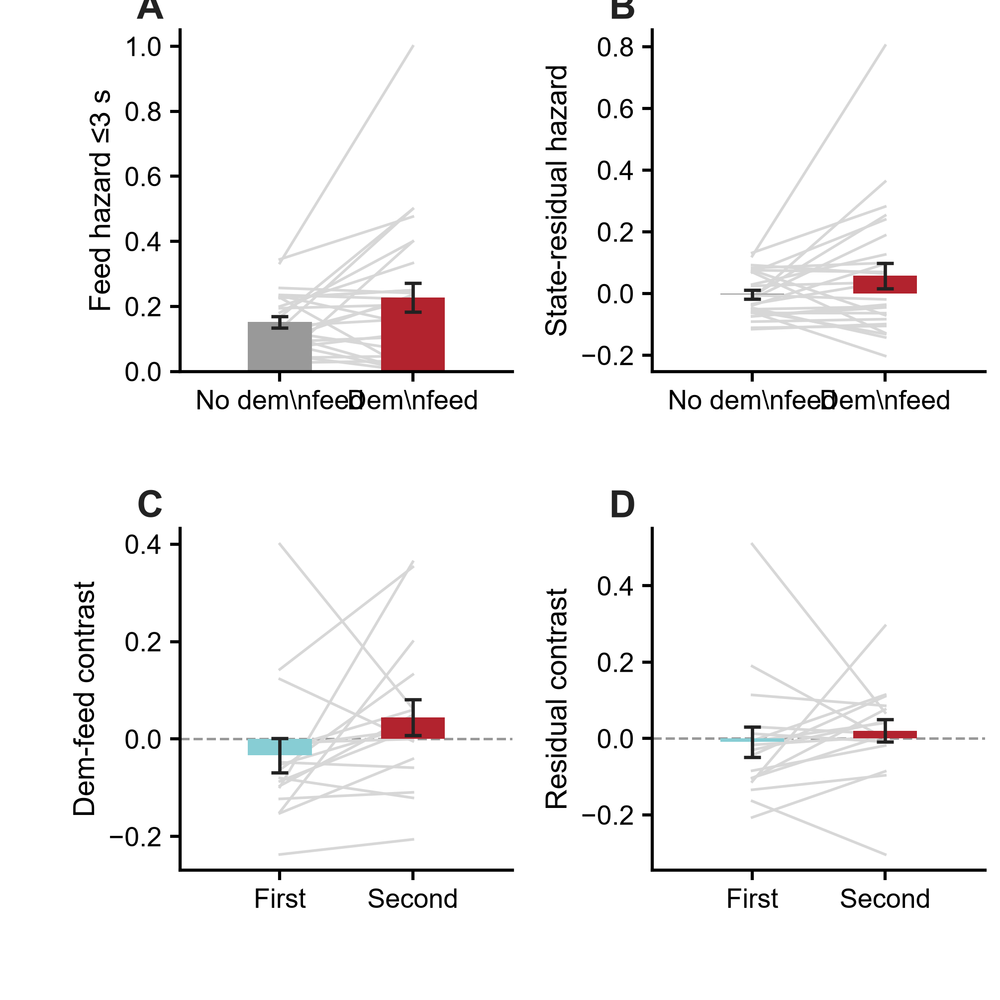
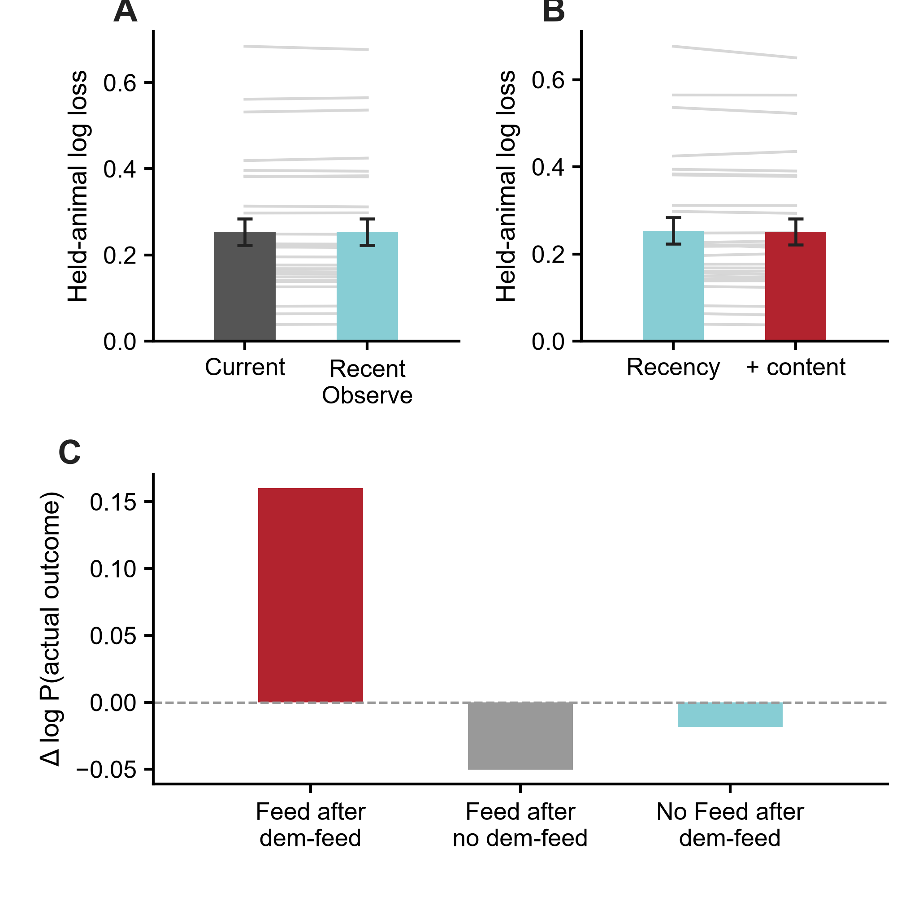
Paired first→second analyzed-session raw and state-residualized dem-feed hazard contrasts.
Generative tests localize where SLM adds structure beyond simpler agents
Held-animal prediction shows that SLM variables forecast choices. A closed-loop agent asks whether the same policy and update rules are sufficient to regenerate the organization of social-information sampling when generated outcomes recursively update the internal state.
Full SLM has the highest trajectory correlation, but Q has a slightly lower RMSE (.1665 vs .1683). Global trajectory therefore provides only weak separation among mechanistic agents.
Full SLM exceeds baseline (.274), Q (.273) and outcome-belief (.246) for the outcome-conditioned strategy kernel and also has the lowest kernel RMSE (.0826).
Full SLM improves occupancy fidelity relative to Q in 24/40 animals (P=.0257) and belief in 25/40 (P=.0130).
Adding SLM coordinates improves policy readout in 5/5 folds under both Active-only and Active+Passive reward ontologies; Brier and NLL also improve in 5/5.
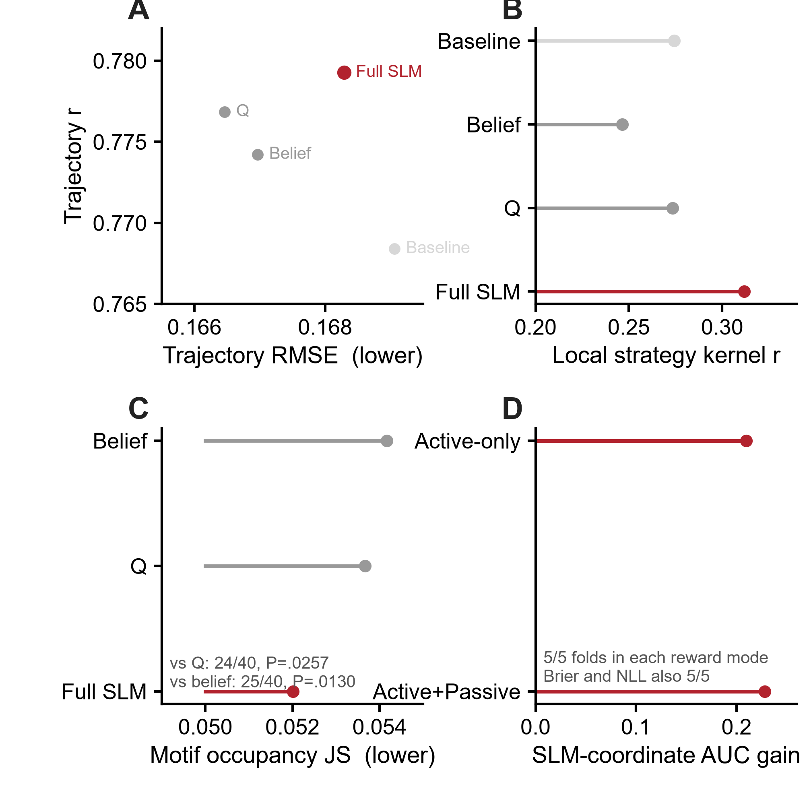
Supporting agent panels


Generative comparator hierarchy, biological scope and recurrent-policy convergence.
Trajectory, local strategy, motif occupancy and recurrent-policy comparator values.
A single RPE account explains part of outcome DA; the full episode requires sampling policy, APE and post-outcome credit
The critical evidence is temporal. Early and Middle windows occur before the social outcome is available, whereas reward prediction error and social-credit updating become defined after outcome.
Sampling-policy effect: r_rb=.810, P=.0469. Q/RPE is ~0 here (r_rb=.048); choice-kernel and Q+CK are negative; TinyRNN is significantly wrong-direction.
Learner-linked APE remains ρ=.667 after conditioning on CK, Q+CK or Q error. Reverse competing-error tests are negative.
SLM RPE and post-outcome social-credit update are positive (r_rb=.867/.956). Q-all RPE is also positive here (r_rb=.867), so Post DA alone does not identify the mechanism.
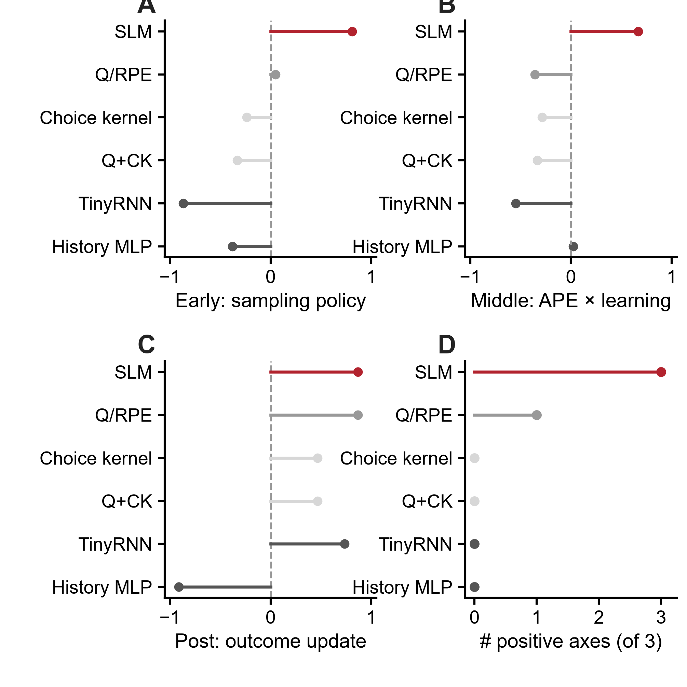
The experiments resolve a coupled sampling-policy and feeding-policy architecture
The architecture follows the task chronology established above: access social information, decide whether to sample it, convert sampled content into Feed, and use the outcome to update future sampling.
Useful visual-social information is reduced while gross observation remains broadly available.
Current state and multiscale memory determine when Observe has decision value.
Sampled demonstrator-feeding content produces a short-latency increase in the learner's Feed hazard.
Post-outcome VTA-dependent teaching updates Active social credit and changes future sampling.
Model lesion: information access vs post-outcome teaching
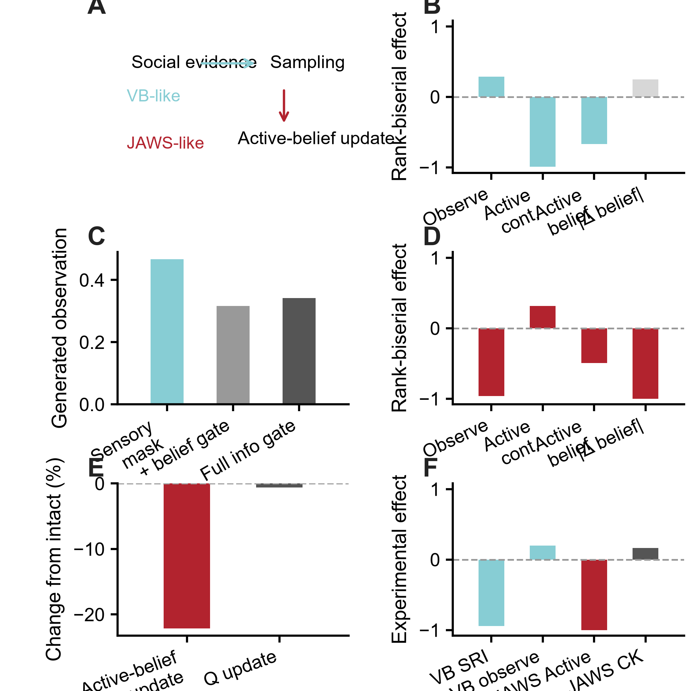
Visual Block and JAWS break different links in the social-information chain
Visual Block reduces access to useful social content. JAWS weakens VTA-dependent teaching after successful social outcomes. Gross observation remains broadly available in both manipulations.
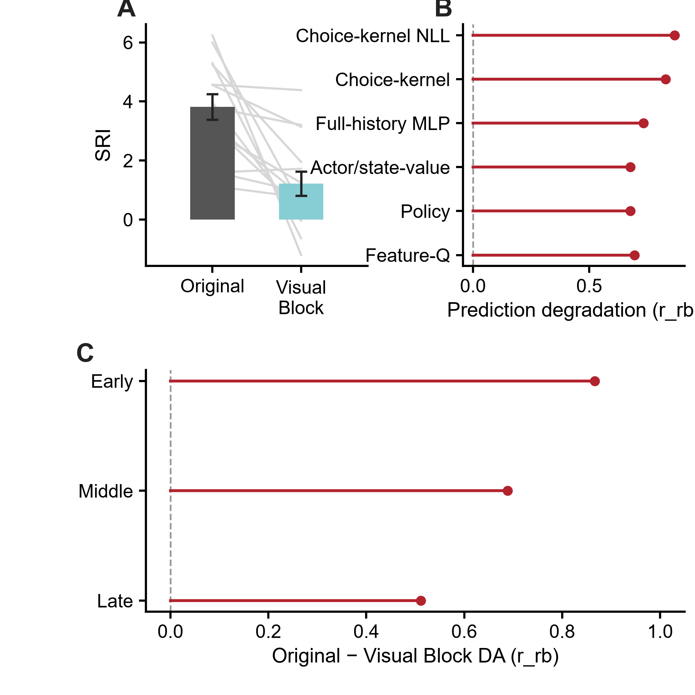
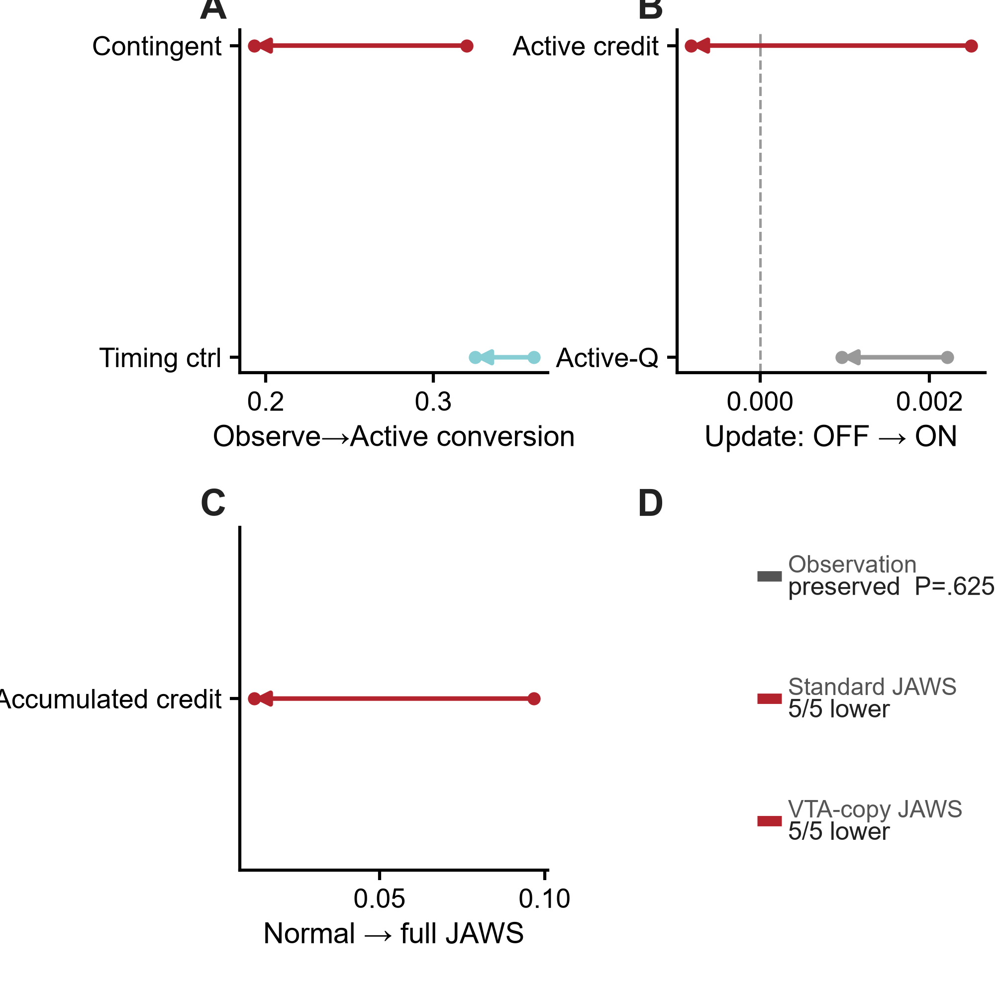
Observe→Active falls .320→.193; 8/10 lower, P=.00391.
Noncontingent OFF→ON is .360→.325 in the same metric.
OFF +.002490 → ON −.000815 per episode; all animals lower, P=.001953.
Normal .0967 → full JAWS .0120; Δ=−.0847, P=.003906.
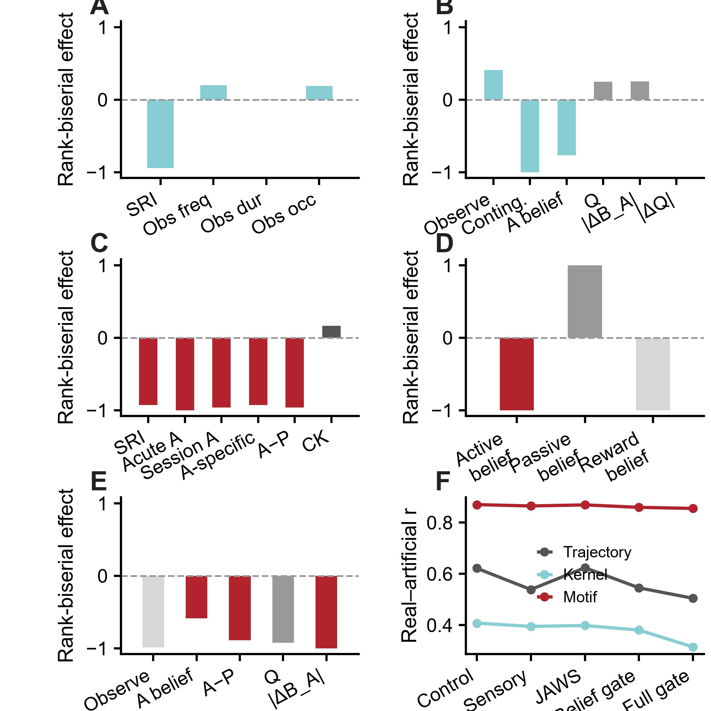
Distinct SOE computations forecast function-matched later behavior, with different levels of incremental evidence
The same six Social-trained mice later entered novel-food and observational-fear assays. The primary question is whether social credit and action-prediction-error sensitivity map onto later phenotypes that match their proposed biological functions.
Nested credit-family prediction reduces held-out absolute error in every mouse relative to the matched simple-behavior family; full model-comparison P=.0486.
Late |APE| tracks later shock-locked velocity. The association is strong, while the simple-behavior family also predicts fear variance.
Credit→food plus APE→fear exceeds the two mismatched cross-domain links under the prespecified exact permutation.
The latent double mapping does not exceed the best pair selected from 16 simple-behavior mappings after selection correction.
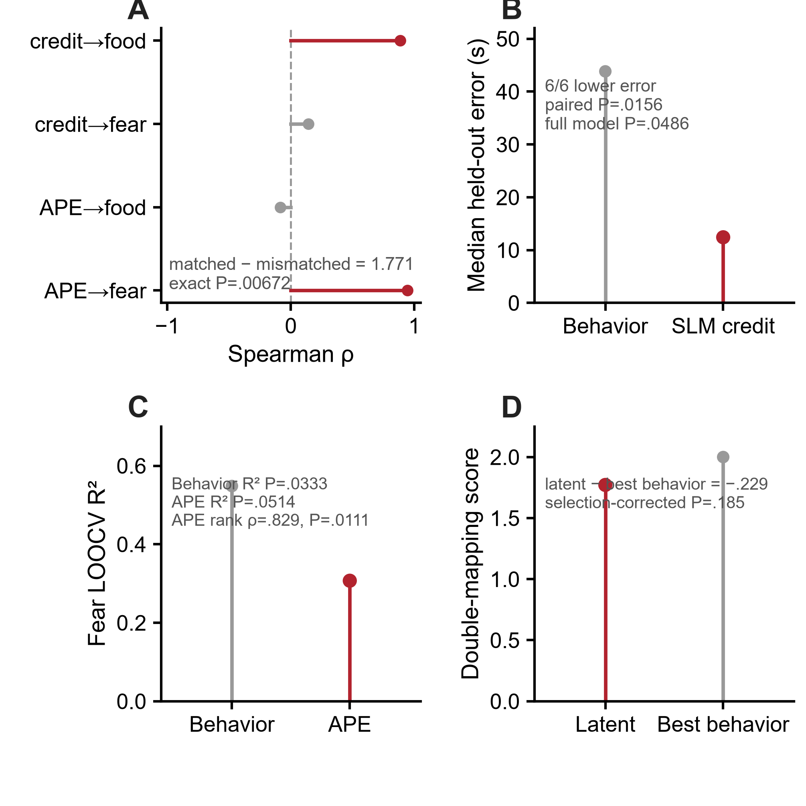
Supporting behavior, latent grounding and 2×2 mapping


Food and fear held-out family comparisons.
Latent mapping, best simple-behavior mapping and corrected comparison.
Exact permutations, window sensitivity and allowed claim language.
Cross-task convergence is strongest at the computation level, with different evidence tiers across datasets
External datasets are organized by the specific operation they can test: source-tagged credit, state-gated information value, task-matched multiscale state, and sampling-to-action separation. Population-level comparator tests, component tests, nested sensitivities and architectural analogues are kept separate.
Human and rat structured-state models clear stronger matched comparators at the independent-subject / independent-rat level: 8/10 in each dataset, P=.00488.
Rat demonstrator-source evidence and macaque source-aware state support source-specific credit. Primate self/other RPE remains literature/audit support pending non-circular held-out reanalysis.
Cooperative role×uncertainty and Aeon partner-history results support conditional social-information value; marmoset evidence accumulation adds a two-animal neural analogue.
SOE provides the direct two-controller evidence. Marmoset gaze→evidence→decision and rat source→later-choice results provide the closest current external analogues.
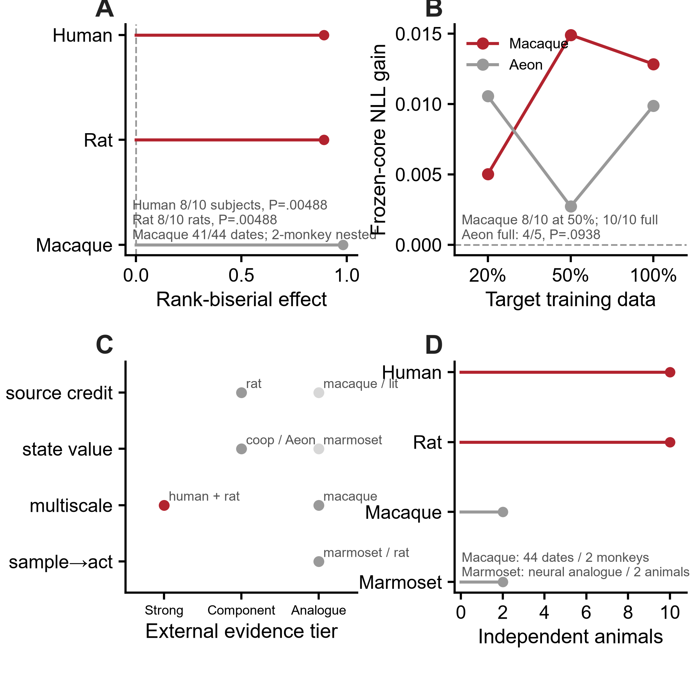
Strong-comparator, transfer and neural audits
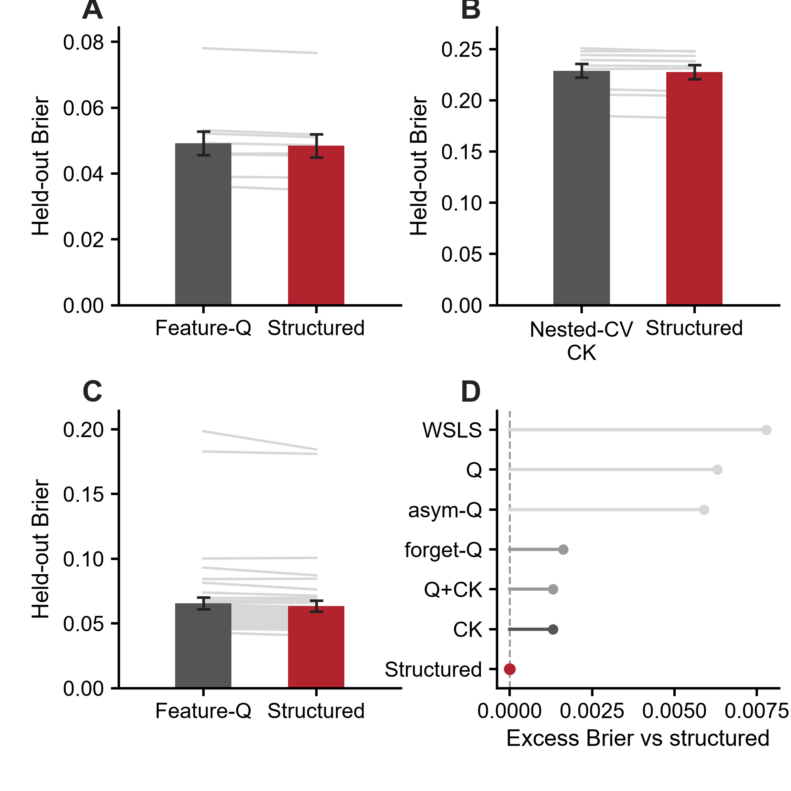


Strong comparator, frozen-core transfer, evidence-tier and inference-unit values.
Human, Rat and Macaque matched-comparator contracts with inference units explicit.
Evidence tiers, transfer boundaries and primate circularity correction.
Current mechanistic authorities and figure sources
The visual page is the navigation layer. The files below are the current authorities for model definition, neural/causal interpretation and the V55 evidence hierarchy. Older registries remain available in the audit archive.
Current authorities
Project-wide statistics, provenance and reproducibility checkpoint.
Default behavioral SLM, APE definition, RPE comparator logic, JAWS credit terms and Feed-stage boundary.
Prospective efficacy, social-content controls, SLM-subspace scrub and future-dynamics boundary.
Strict native Feed contract and observed-content conversion analysis.
Model recovery and generative sufficiency authority.
Visual-access and Active-credit lesions in the frozen autonomous agent.
Nested latent-vs-behavior tests, 2×2 mapping and selection-aware boundary.
Cross-species evidence tiers, frozen-core transfer and primate circularity correction.
Current figure-source tables
Weak baselines, classical RL, SLM core, default SLM and capacity controls.
Next-decision, minute-scale and cross-day memory statistics.
Early policy, Middle APE and Post update comparator statistics.
Conversion, post-outcome credit update and accumulated-credit causal tests.
First→second analyzed-session dem-feed contrast sensitivity.
Current-cue, social-content, decoder, scrub and future-dynamics panels.
Food and fear nested latent-vs-simple-behavior tests.
Latent 2×2 mapping versus best selected simple-behavior pairing.
Evidence tiers, frozen transfer and population inference units.
Human, Rat and Macaque matched-comparator contracts.
Legacy / audit archive
Earlier comprehensive analysis ledger; current section-specific authorities above define present terminology and claim boundaries.
Phenotype, gaze, motif and control registry retained for audit.
Project-wide bounded effects and inferential units.
Full dataset-family registry retained for audit.
Earlier unit-level comparison table.
Earlier cross-dataset forest source.
Earlier positive-result summary; V55 hierarchy is the current evidence-tier authority.
Earlier dataset×principle map retained for provenance.